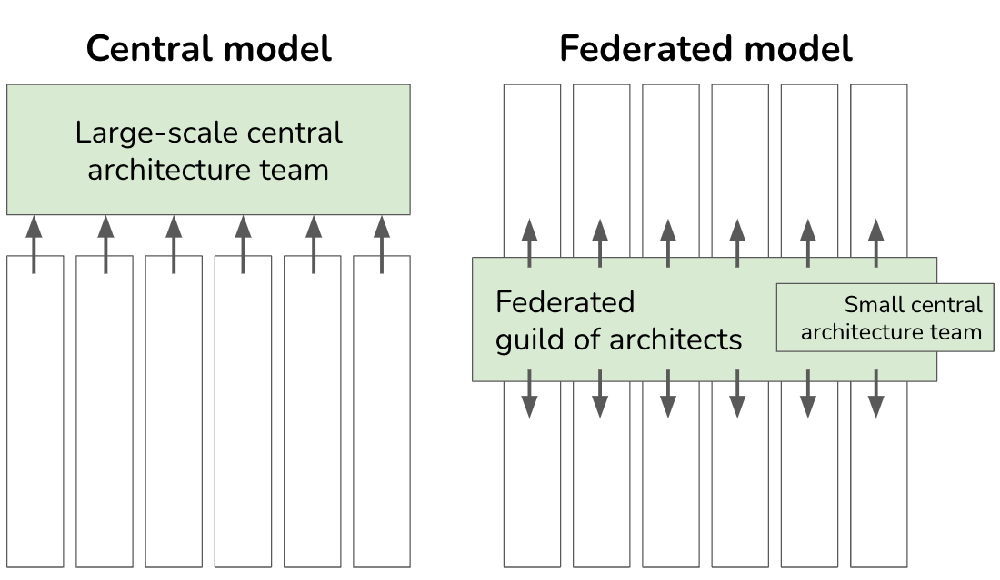

Collaborative Networks
|
|

IN THIS SECTION, YOU WILL: Understand that an architecture practice is all about people and get tips on creating organizational structures that support a practical IT architecture practice.
KEY POINTS:
- Developing an architecture practice requires having competent, empowered, and motivated architects. An an architecture practice must carefully organize, empower, and leverage scarce talent.
- In my work in the past few years, I combined two teams of architects: a small central architecture team and a cross-organizational distributed virtual team.
Good architects are a rare breed. They bridge the gaps between business, product, organizational, and technology issues. They’re like the Swiss Army knives of the tech world. Hiring architects is like searching for a unicorn who’s also a full-stack developer with a knack for diplomacy. They need not only in-depth technical knowledge but also domain-specific and organizational knowledge.
So, you cannot just 3D print your architects or hire them in buckets. But you can carefully organize, empower, and leverage this scarce talent (Figure 1).
 Figure 1: The Grounded Architecture framework: Collaborative Networks.
Figure 1: The Grounded Architecture framework: Collaborative Networks.
A strong network of people doing architecture is crucial for any real impact. In simpler terms, Strong Architecture = Strong Architects.
In my recent escapades, I worked with two teams of architect teams: a small central architecture team and a cross-organizational distributed virtual team. The central team is like the wise elders, guiding and supporting the rest of the organization. The distributed virtual team, on the other hand, is a merry band of rebels, working locally but also connecting across the organization, increasing transparency, building networks, and implementing change. Together, such a mix of central and distributed teams can create a robust collaborative network driving change across an organization.
Background: Central vs. Federated Architecture Practice
An IT architecture practice generally follow one of two fundamental models: central or federated (Figure 2, McKinsey 2022).
 Figure 2: Central vs. Federated Architecture Practice.
The central model is like a tightly run coffee shop. A large central team sets the rules, approves new work, and ensures everyone follows the script. Development teams in this model are like customers with no coffee-making skills, relying entirely on the central baristas. The central team handles infrastructure, operations, and security—essentially controlling the caffeine supply chain.
The federated model is more like a coffee co-op, where each team has its own barista. A small central team or an architecture center of excellence (CoE) might provide high-level guidance, but the real magic happens locally. These baristas (architects) are embedded in development teams, facilitating high-level planning and acting as on-demand service providers.
The federated model is a favorite among cross-functional DevOps cultures. It integrates infrastructure, operations, and security into its brews. Architects in this model focus on facilitation and enablement, and stay close to the action.
The Hybrid Model
To operate in a complex context, you must invest effort to ensure you have the right people at the right places. In the end, I usually found it best to adopt a model of a hybrid organization combining elements of central and federated orientation structures:
- A Small Central Architectural Team, and
- Architecture Guilds & Virtual Architectural Teams.
This model is similar to the previously described federated model but with extra investment in a central team that should be more than just an on-demand service provider.
Think of it as a symphony orchestra, where the central team is the conductor, and the guilds and virtual teams are the talented musicians playing different instruments. Sure, each musician can play their part solo, but without the conductor, it might sound more like a chaotic jam session at your neighbor’s garage.
I prefer the hybrid team structure as it scales better in complex organizations:
-
Guilds and virtual architecture teams support execution by increasing the number of people involved in architectural activities and increasing work efficiency through better alignment. Members representing various organizational units can have much more impact across the board.
-
Having some capacity on the central level serves as a catalyst, helping people at local levels to do their jobs while being aligned and better connected with overall strategic goals and other teams working on related topics.
Central Architecture Team
The roles of people in central teams may differ depending on the organization. However, it’s crucial to recognize uniwue value a central architecture team.
Such a team, in addition to the doing architecture work, can be instrumental in covering these often overlooked responsibilities:
-
Build and maintain the architecture Lightweight Architectural Analytics. With all AI advances, it will not build itself! You need clear ownership, curation, and technical support to make it work.
-
Promote data-informed decision-making. It’s not enough to have data; you’ve got to use it. This is like trying to convince your grandpa to use a smartphone—challenging but doable. Architects should be tech-savvy wizards who show everyone else how things are done, making data the critical actor of every decision.
-
Proactively identify, connect, and maintain relationships with all relevant stakeholders. Think of architects as the social butterflies at a high school reunion—they’ve got to bridge all the cliques. Connecting different organizational units and stakeholders is their superpower.
-
Build internal architecture communities and guilds. Organizing rituals and gatherings takes effort.
While guilds and virtual teams can handle many of these activities, their voluntary and sometimes laid-back nature makes their support less reliable. The central architecture team can step in like the dependable backup generator, taking full long-term ownership and ensuring continuity, even if the community vibe fizzles out.
Architecture Guilds & Virtual Architecture Teams
I’ve always found it crucial to rally passionate troops about architecture through a guild, a community of interest, or a virtual team. After all, who doesn’t love a good architecture geek meet-up?
Our guilds or virtual team members typically double as architects or tech leads in their respective departments. But they also moonlight by collaborating with their counterparts from other areas. These peer-to-peer communities are collectively responsible for spotting and nurturing architectural talent, mentoring, and helping each other out of sticky situations.
If you end up having an overabundance of guilds and teams, you can try splitting them into different cliques:
- General or core teams: These folks could tackle various general architectural topics.
- Specialist teams: These teams can focus on specific parts of the tech stack, such as native mobile apps, web frontends, or public clouds.
- Strategic initiatives teams: These teams work on the big picture, such as data strategy, public cloud strategy, transactions, or verticalization.
Connecting the central and distributed teams is essential. In most places I’ve worked, we organized gatherings to facilitate regular alignments, such as:
- Regular (e.g., bi-weekly) forums: Here, updates are shared, architectural spikes are announced, and decisions are debated.
- Annual or bi-annual summits: These are the architecture equivalent of Comic-Con, with several days of intense knowledge sharing and workshops.
- Ad-hoc workshops: These focus on specific topics and deep dives into niche subjects.
While the central team can provide essential support, all communities must take the initiative and get many people involved in these events. It’s crucial that people are active participants rather than passive spectators to ensure more engagement and commitment. So, get ready to roll up your sleeves and dive in, because architecture is a team sport, and everyone needs to play their part!
Building Collaborative Networks
While each organization will need its unique approach, here are some tips I found helpful when forming architecture teams and building Collaborative Networks:
-
Before making grandiose plans for reorganizations, connect with the people already doing architectural work in an organization. Bring together all the critical tech leaders, regardless of their position and title. Being well-connected to these folks will be crucial in any architecture organization, so this effort is never wasted.
-
If creating a virtual team is a part of your architecture strategy, move away from the informal community of practice and start building a team with more accountability and responsibility.
-
Connect with non-architecture people early to gain broader support for building architecture teams and guilds. Being well-connected to these stakeholders is crucial to have strong collaborative networks.
-
Avoid hiring a digital hitman. Instead, invest in growing internal talent. Think of it this way: architects need to know the technology, the domain, and the organization.
-
Externalize. Reach out and connect. Participate in external events. Publish your work. Being strong externally can help you grow and attract architectural talent. Everyone wants to join the band when you’re rocking the stage.

To Probe Further
- Agile and Architecture: Friend, not Foe, by Gregor Hohpe, 2020
- Crafting the optimal model for the IT architecture organization, by Christian Lilley et al., 2022
- Developers mentoring other developers: practices I’ve seen work well, by Gergely Orosz, 2022
Questions to Consider
It is difficult to overestimate the importance of people for an architecture practice, yet many organizations take architectural talent for granted. To reflect on the importance of carefully organizing, empowering, and leveraging scarce architecture talent, ask yourself the following questions:
- Do you have a strong network of architects across the organization?
- Which central, federated, or hybrid model best represents your current an architecture practice? Why was this model chosen, and how effective has it been for your organization?
- If you are part of a central architecture team, how would you support the rest of the organization? How would you contribute to the global an architecture practice if you were part of a distributed virtual team?
- Consider having the roles of central architecture teams and federated architecture teams in your organization. How would they complement each other?
- How effective is the current division of responsibilities among architects in your organization? Are there areas of overlap or gaps in coverage?
- What steps has your organization taken to ensure architects are well-connected across all parts and levels? What impact has this had on transparency and the implementation of changes?
- Reflect on the diversity of team structures within your organization. How does this diversity impact the roles and responsibilities of architects?
Grounded Architecture Framework ← Lightweight Architectural Analytics |
Grounded Architecture Framework Operating Model: General Principles → |